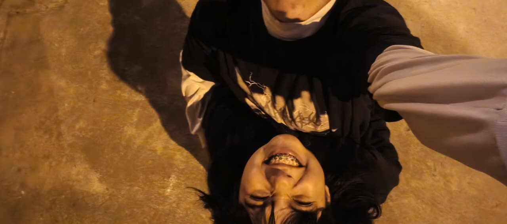

EL COMIENZO
Cuando coincidimos
A veces lo más bonito empieza sin que uno se dé cuenta. Una conversación, una sonrisa, un momento cualquiera que termina convirtiéndose en algo importante.
✦
Para Carla, con todo mi cariño.
Entre tantas personas, tantos lugares y tantos momentos, qué bonito fue coincidir contigo. Este pequeño rincón existe para guardar un poquito de todo lo que significas para mí.

Hay personas que llegan y hacen que los días tengan algo diferente.
EL PRINCIPIO DE ALGO BONITO
No necesito que nuestra historia sea perfecta. Me gusta porque es nuestra, con cada momento, cada conversación y cada recuerdo que hemos construido.
A veces lo más bonito empieza sin que uno se dé cuenta. Una conversación, una sonrisa, un momento cualquiera que termina convirtiéndose en algo importante.
Fuimos creando nuestra propia manera de entendernos, de compartir y de estar presentes. Y entre tantas cosas, encontré razones para seguir eligiéndote.
Todavía quedan muchísimas cosas por vivir. No sé exactamente qué traerá cada día, pero me gusta pensar que tendremos nuevos recuerdos que añadir aquí.
PEQUEÑOS PEDAZOS DE FELICIDAD
Ocho fotografías, muchos sentimientos y recuerdos que tienen un significado especial. Haz clic en cualquiera para verla más grande.
NO TODO SE TRATA DE GRANDES MOMENTOS
Hay cosas que quizá parecen sencillas, pero que hacen que alguien se vuelva inolvidable.
No tienes que hacer nada extraordinario para ser especial. Hay algo en tu forma de ser que te hace única.
01Me gusta compartir tiempo contigo, incluso cuando no estamos haciendo absolutamente nada.
02Las conversaciones, las bromas y esos momentos que terminan siendo recuerdos sin planearlo.
03Todavía tenemos momentos por descubrir, lugares por conocer y recuerdos por crear.
04Me alegra que seas parte de mi vida.
SIN PRISAS, LEE ESTO.
ESCRITA CON CARIÑO, PARA ALGUIEN ESPECIAL.
Mi querida Carla:
Quería hacer algo diferente para ti. Algo que no fuera solamente un mensaje más, sino un pequeño lugar al que puedas volver cuando quieras recordar lo importante que eres para mí.
Gracias por los momentos que hemos compartido, por las conversaciones, las risas y hasta por esas pequeñas cosas que quizá parecen insignificantes, pero que yo guardo con mucho cariño.
No siempre encuentro las palabras exactas para expresar lo que siento, pero quiero que sepas que valoro muchísimo tenerte en mi vida. Me gusta nuestra historia, me gusta lo que hemos construido y me emociona pensar en todo lo que todavía nos queda por vivir.
No quiero que estas palabras sean solamente bonitas. Quiero que sean un recordatorio de que detrás de cada detalle de esta página hay alguien que pensó en ti y quiso regalarte algo hecho especialmente para ti.
Con muchísimo cariño, J. ♥
DOS INICIALES, UNA HISTORIA
Si nuestra historia fuera un universo, cada recuerdo sería una estrella. Algunos brillarían más que otros, pero todos formarían parte del mismo cielo.
RECUERDOS QUE NO QUIERO OLVIDAR
Porque no todos los recuerdos necesitan una fecha para tener un lugar especial.
Esos días en los que basta con compartir un rato, hablar de cualquier cosa y disfrutar de la compañía.
Entre tantas posibilidades, nuestros caminos terminaron encontrándose. Y eso siempre tendrá algo bonito para mí.
Que algún día podamos mirar atrás y encontrar muchísimas páginas nuevas llenas de momentos nuestros.
ESTA HISTORIA SIGUE ESCRIBIÉNDOSE
Gracias por formar parte de mi historia, Carla.